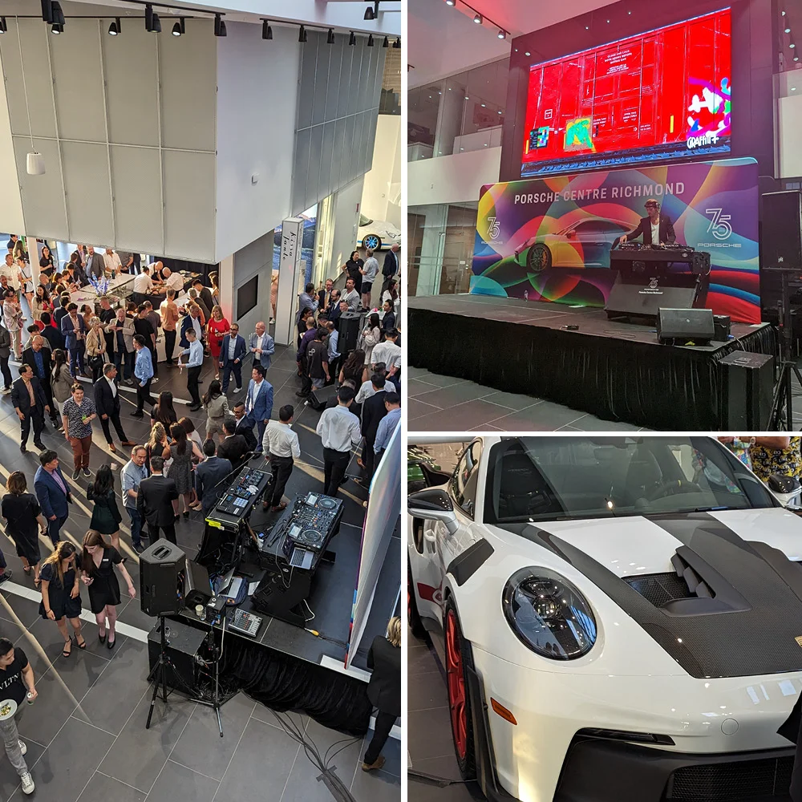
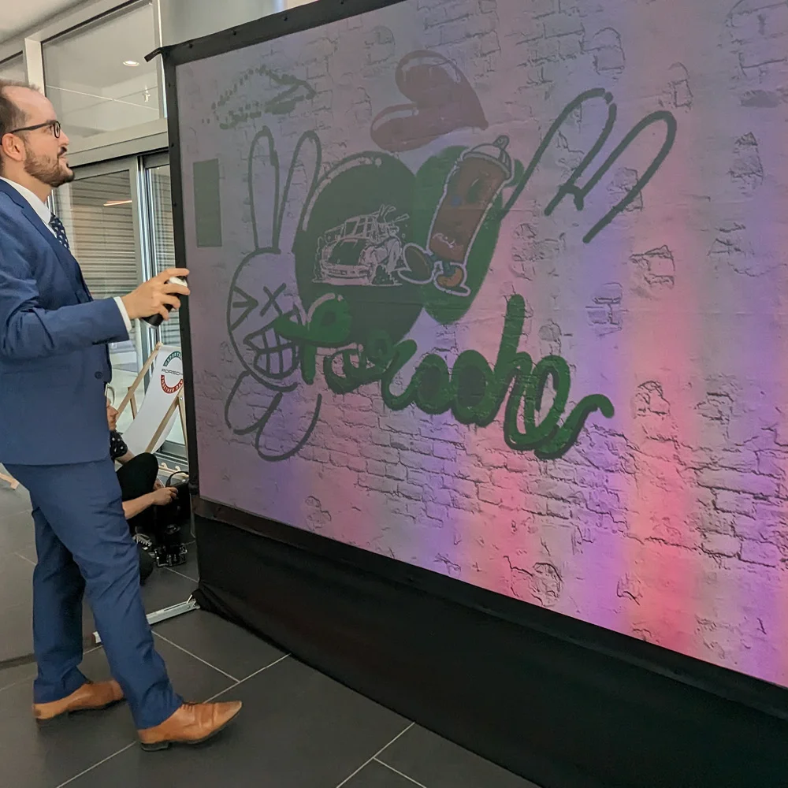
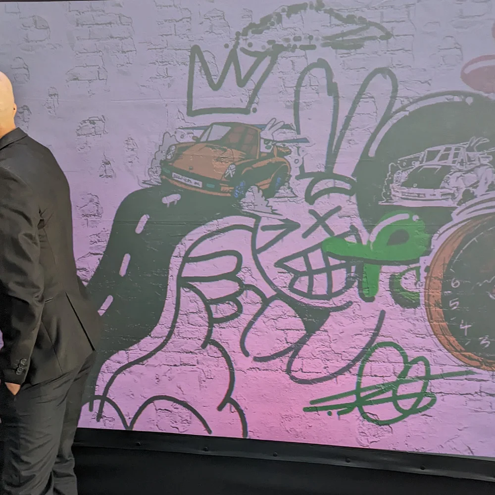
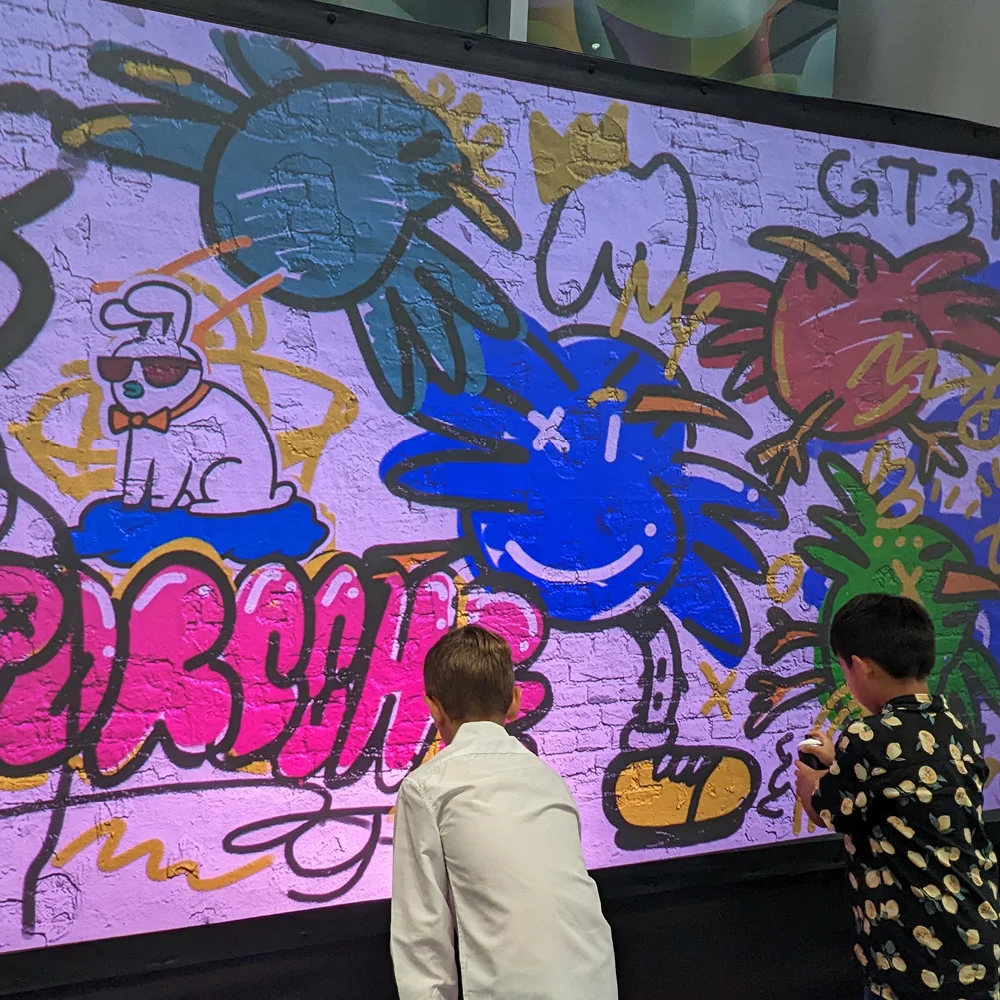
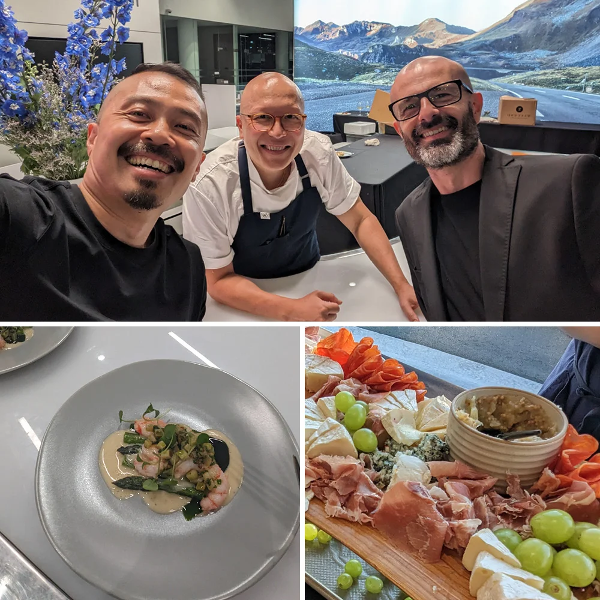
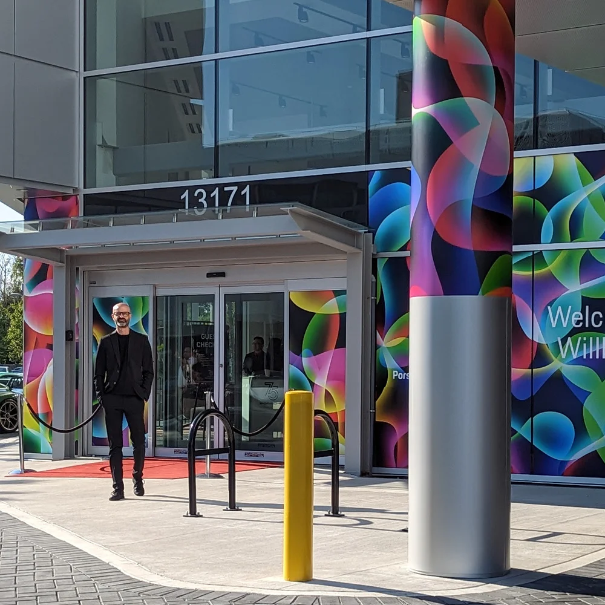

Porsche 75th.
Festival of Dreams.
A VIP mural that stayed on the wall.
- Date
- June 9, 2023
- Location
- Porsche Centre Richmond
British Columbia, Canada - Event
- Festival of Dreams
Porsche 75th Anniversary (1948–2023)
+ Centre Richmond grand opening - Artist
- Carson Ting
Chairman Ting Art + Design Studio
Porsche's 75th anniversary in a Vancouver showroom, an award-winning local artist on the wall, and a digital mural that became a permanent piece in the dealership.
On June 9, 2023, Porsche Centre Richmond celebrated the marque's 75th anniversary (1948–2023) — and the 60th anniversary of the iconic 911 — with Festival of Dreams, a VIP evening built around the cars, the food, and the wall. We brought the interactive Graffiti+ system into the showroom and partnered with Carson Ting — the Vancouver-based illustrator behind Chairman Ting Art + Design Studio — to lead the artist side.
We built more than a dozen custom digital stickers and stencils for the event so guests could paint within Porsche's visual vocabulary — the marque's badge, model silhouettes, anniversary motifs. VIPs each took a turn on the wall, collectively painting one massive digital panorama mural under Carson's direction. When the night ended, the finished piece was lifted off the LED, printed, and installed as a permanent wall art piece in Porsche Centre Richmond — a lasting memory of the opening that the dealership's customers still walk past today.
Around the wall: a live DJ, tastings by MICHELIN-Star restaurants AnnaLena and Kissa Tanto (the latter from Chef Joel Watanabe, also behind Bao Bei), catering from Published, and a heritage car lineup that included a 2005 GT Silver Carrera GT, a 1992 Slate Grey 964 Carrera 2, a Guards Red 2021 718 Boxster GTS, a 2015 Black 918 Spyder, a 2004 996 GT3 RS, and a 2023 Sport Grey 911 Sport Classic. The wall held its own against the cars on the floor — which is about as good as it gets for a showroom event.
Eighteen years. Six continents. One idea, done right.
For eighteen years, Graffiti+ has been putting real creative tools in people's hands — in public, at scale, and always with cultural integrity.
Born from the roots of graffiti culture and built for anyone willing to pick up a custom spray can, the platform transforms automotive showrooms and brand spaces into shared canvases where guests paint together in real time — and occasionally leave a permanent mural behind. From their home in Vancouver to projects across six continents, Graffiti+ has partnered with Porsche, Hyundai, Samsung, Nike, Louis Vuitton, Chanel and Hennessy to bring authentic, participatory experiences to audiences everywhere.
The wall went up for one night. The mural stayed on the wall forever.





